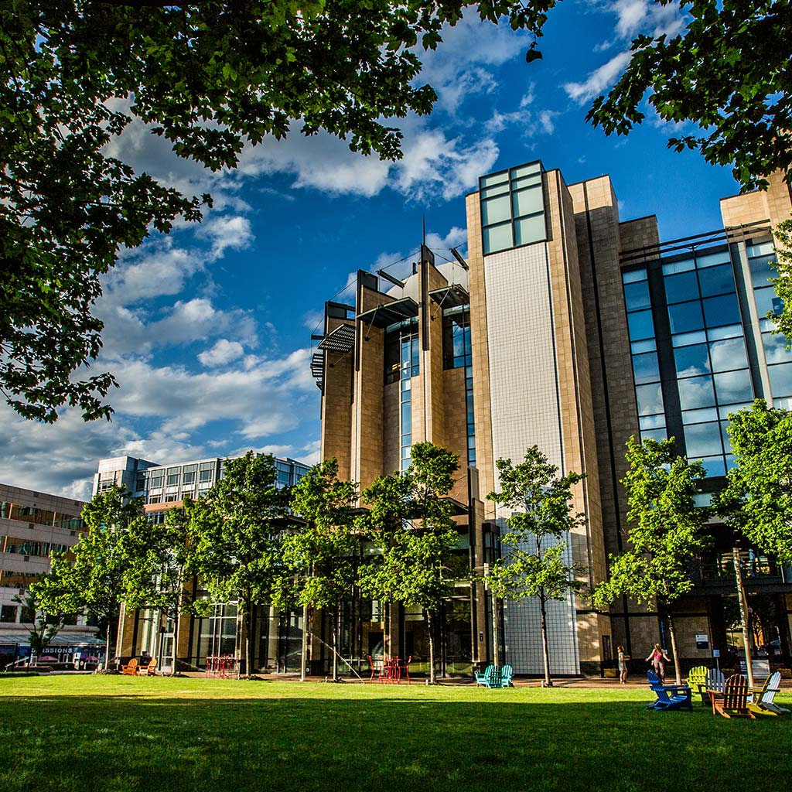

Providence
Our Providence Campus thrives on the Creative Capital's unique blend of New England college town and rising culinary, design and tech hub. Live, work and play in this dynamic city.
North Miami
South Florida is an international center of business, trade and tourism — and it's at your doorstep. You'll have the opportunity to apply what you've learned to internships in the region's tourism- and business-rich coastal corridor.
Denver
The Denver Campus sits on 26 park-like acres just 10 minutes from downtown Denver. Being so close to the Rocky Mountains spells career opportunity for those interested in sports event management, casinos and adventure tourism.

Charlotte
The Queen City is home to multiple Fortune 500 companies, including Bank of America, NASCAR and Lowe's — creating a business-friendly environment with a wealth of internship and career opportunities.
Online
You are professionally focused. So are we. JWU's College of Online Education offers the same high-quality programs that have defined our 100-year history.